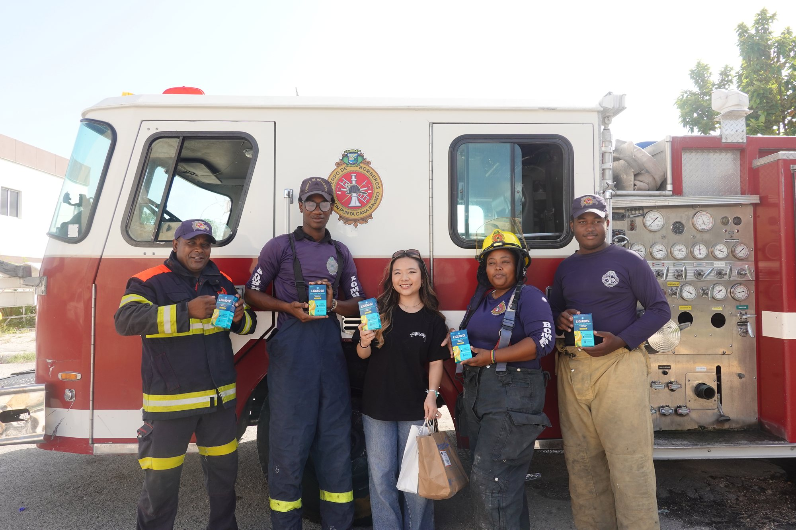

Biomarkers for Early Lung Damage in Wildland Firefighters
Original research write-up translating peer-reviewed studies on wildfire smoke exposure into a plain-language explainer.

Wildland firefighters are constantly exposed to PM2.5 and other harmful particles contained in wildfire smoke. The effects on the lungs often show up long before any visible signs of disease appear. Conventional tests tend to identify disease only after considerable damage has already been done. That's why scientists are increasingly focused on biomarkers: substances measurable in blood, breath, and other bodily fluids that can signal inflammation and lung injury.
Because most lung diseases take years to develop, early detection is difficult. By the time symptoms appear, irreversible damage may already exist. Researchers are working to identify biomarkers that flag early-stage lung damage, so doctors can monitor firefighters more closely and intervene sooner.
So what exactly is a biomarker? It's a measurable indicator of a physical process happening in the body, detectable in blood, urine, saliva, or breath. Several biomarkers have emerged as useful measures of smoke-related lung health:
- C-reactive protein — a marker of inflammation throughout the body.
- Interleukin-6 — a protein released during immune responses.
- Club Cell Secretory Protein — a protein that decreases when lung tissue is damaged.
- 8-Hydroxy-2'-deoxyguanosine — a marker of oxidative DNA damage caused by free radicals.
Wildfire smoke is made up of fine PM2.5 particles and toxins that inflame the lungs. Researchers have found that firefighters show short-term shifts in these biomarkers during wildfire incidents, even when standard lung-function tests still read normal. Scientists are now studying whether elevated biomarker levels during wildfire season can predict future disease, including COPD, pulmonary fibrosis, or lung cancer.
Wildfire Smoke Exposure → Lung Inflammation → Biomarker Changes → Early Detection → Earlier Treatment
Researchers are working to develop fast blood tests and diagnostics that can detect these biomarkers during or after wildfire season. Combined with medical imaging, biomarker screening could eventually help health professionals to:
- Detect lung injury before symptoms appear — new blood and respiratory tests aim to catch inflammation, oxidative stress, and cell damage earlier than firefighters currently notice symptoms.
- Monitor health across a wildfire season — tracking biomarkers before, during, and after wildfire season helps physicians tell short-lived inflammation apart from lasting smoke-inhalation damage.
- Identify firefighters who need closer monitoring — researchers are studying whether specific biomarkers correlate with higher lung cancer risk, which could mean more frequent checkups for those at greater risk.
- Support personalized treatment — future research aims to combine biomarker testing with pulmonary function testing, CT imaging, and exposure history to build individualized care plans.
While more research is still needed, biomarker screening could become a powerful tool for protecting the long-term health of firefighters working wildfire assignments.
Sources: National Institutes of Health (NIH) · National Institute of Environmental Health Sciences (NIEHS) · CDC/NIOSH · American Thoracic Society · U.S. Environmental Protection Agency (EPA) · American Lung Association
Join a chapter, start one, or support the mission directly.
Whether you volunteer at a school drive, launch a chapter, or contribute resources, there are multiple ways to take part in Project Pulmonary.